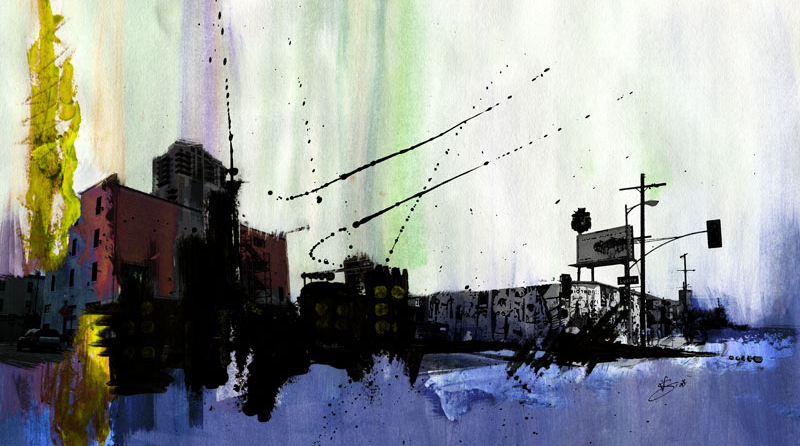
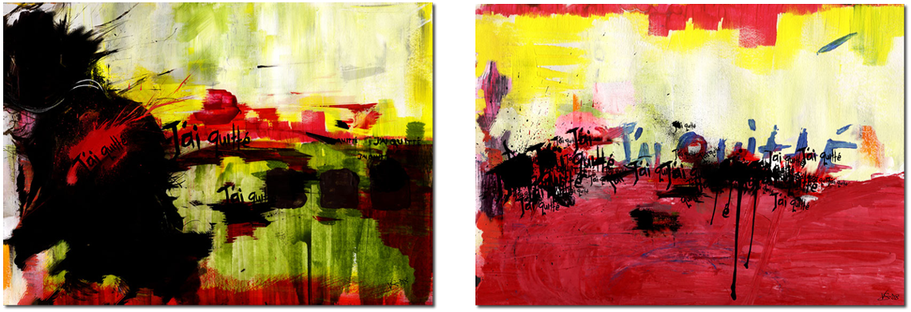
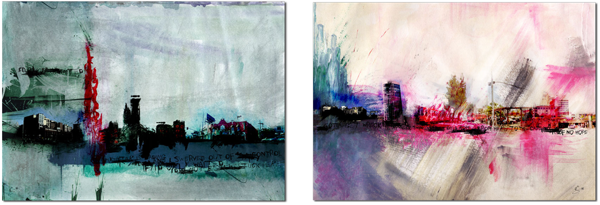
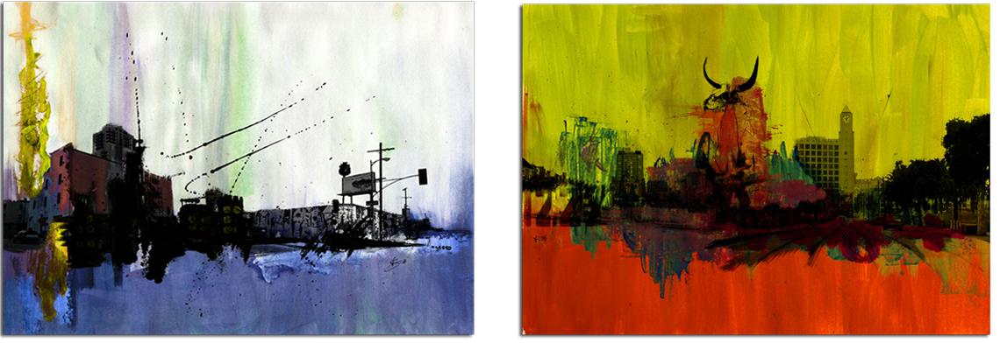

In 2008 I was invited to showcase my paintings for the opening of
Origin Gallery in Shanghai.
media
water colour on canvas combined with mixed media like pencil sketches and photographs.



← Back to archive